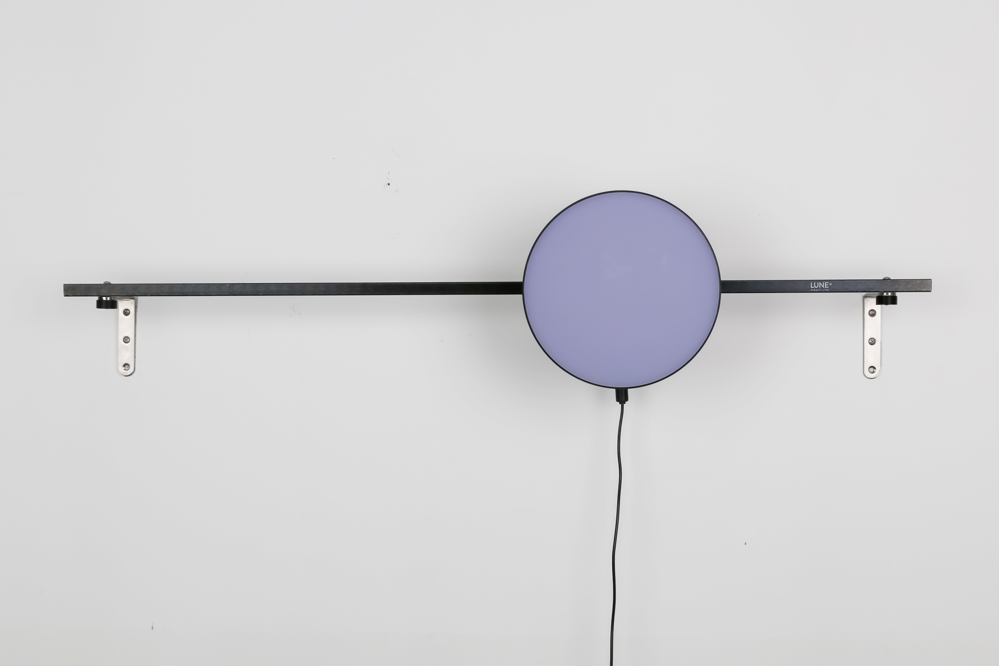
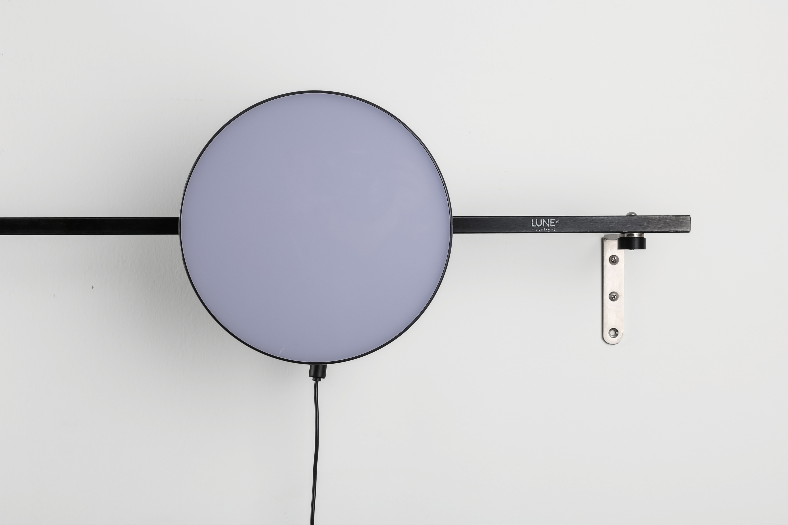
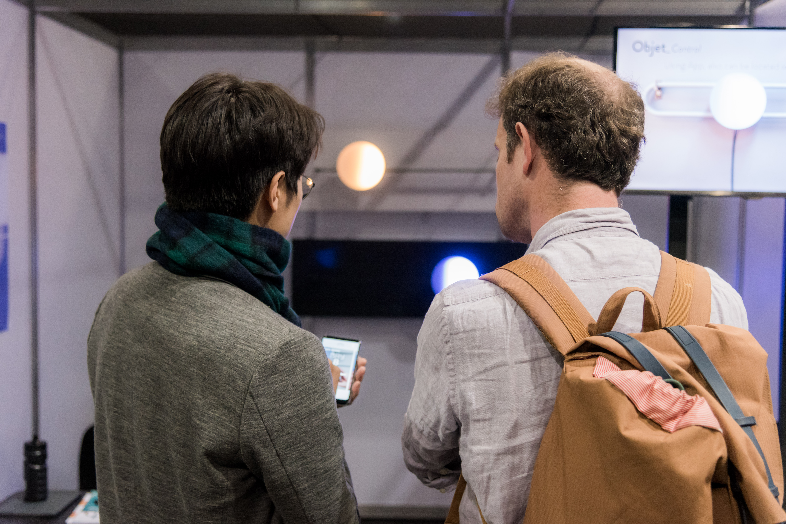
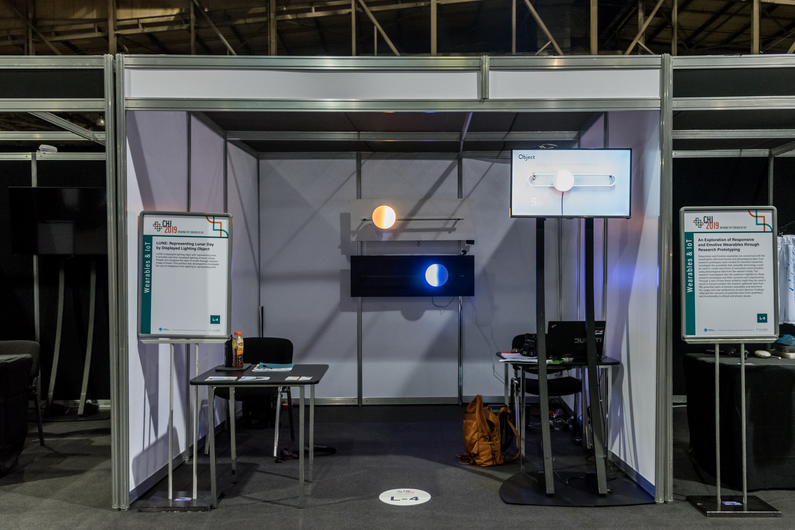
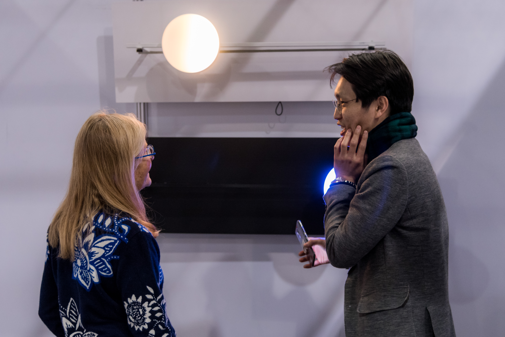
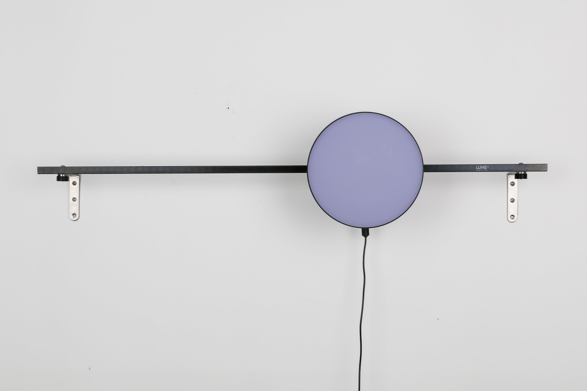
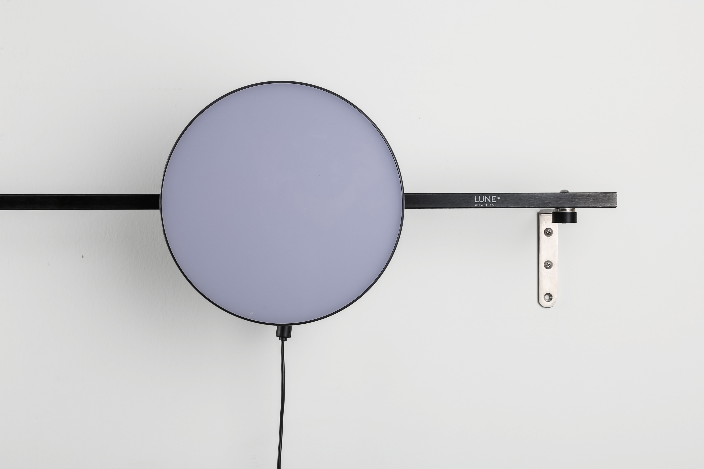
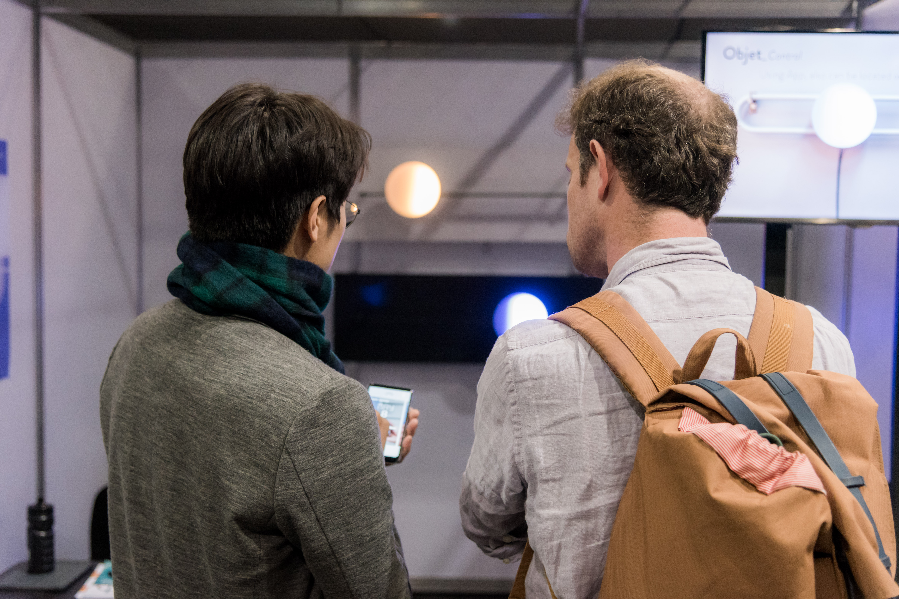
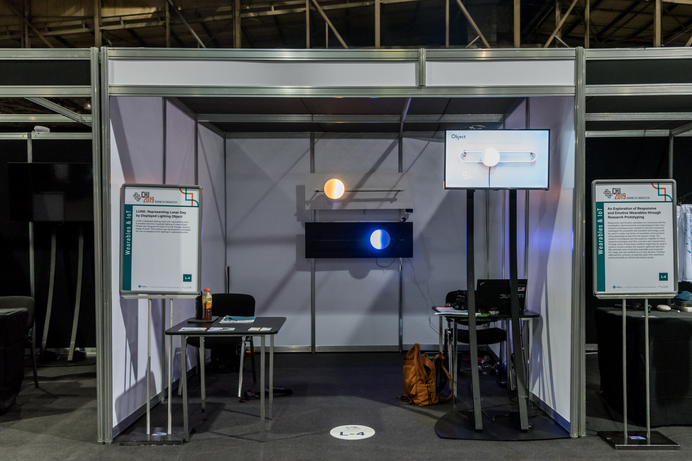
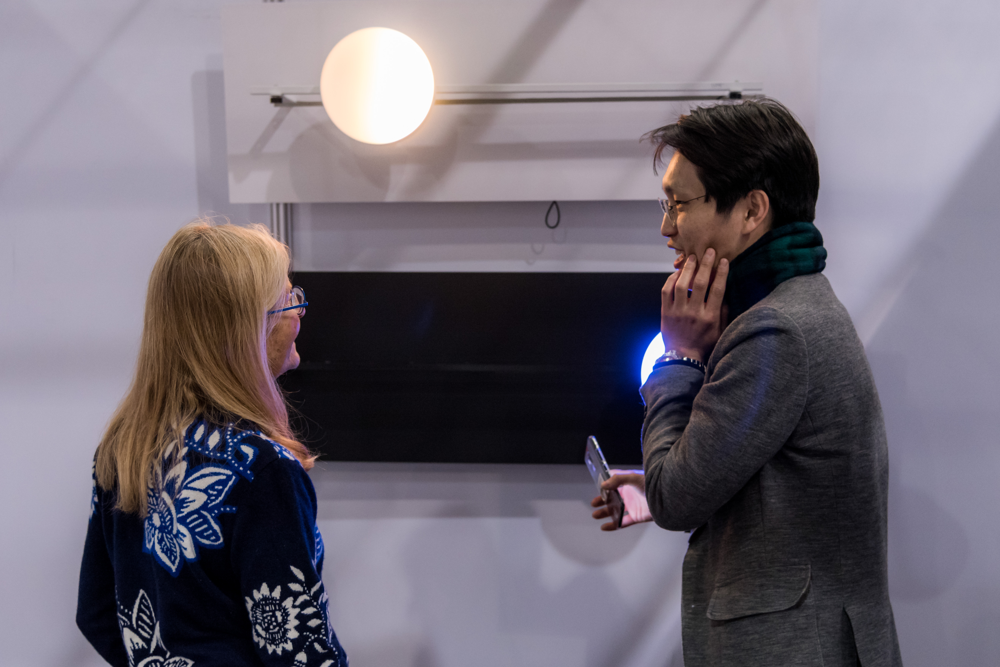

LUNE: Representing Lunar Day by Displayed Lighting Object
Date: 2019
Project Type: Research
Overview
Moon phase have played an important role in human-nature interaction throughout history. Moon phase show human-nature interaction. Many traditional farming societies used lunar calendars to determine that best times to plant and harvest crops.
Abstract
LUNE is a displayed lighting object representing time. It provides real-time lighting visualized moon phase. People can recognize the date of month through abstract image of moon. This product was developed to investigate the use of metaphor from lighting to represent time. A diverse set of researches and design initiatives related to time, temporality and slowness has emerged in the DIS and HCI communities. An important area of work is to represent time. The primary objective of this research is to suggest the new perspective of time called sense of time. First, we can understand how people perceive the time and we can also trace recent research related to perspectives of time in HCI. Second, we designed artifacts and investigated the use of moon phase as material to represent time in a new approach.
 








